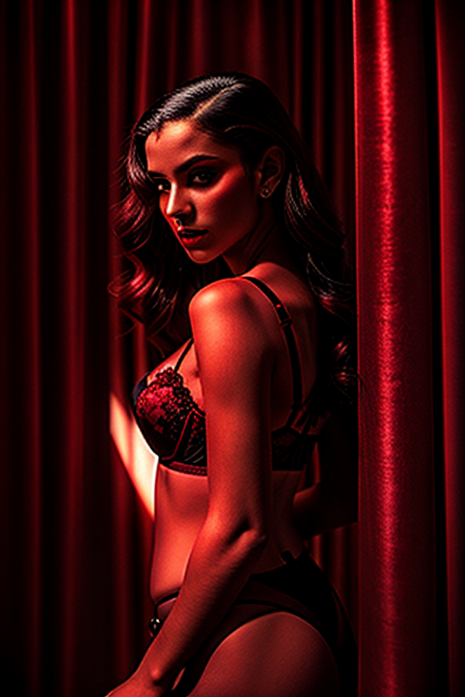
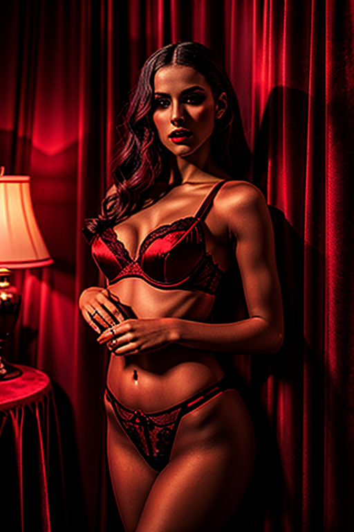

This set explores female sitting red chair shoot through studio aesthetics and romantic tone under neon lights. Compositions use wide shot with indoor studio, keeping focus clear and tidy. Details like casual styling and balanced colors make browsing easy.
Browse redroom images. Page 5 of curated redroom-style portrait collection.




Here we highlight page5, aiming for clean structure, quick scanning, and useful context. The image aims to deliver a straightforward visual impression while keeping the file lightweight. A brief explanation clarifies the subject and lighting so visitors can quickly decide where to go next. The image aims to deliver a straightforward visual impression while keeping the file lightweight. A brief explanation clarifies the subject and lighting so visitors can quickly decide where to go next. The image aims to deliver a straightforward visual impression while keeping the file lightweight. A brief explanation clarifies the subject and lighting so visitors can quickly decide where to go next. The image aims to deliver a straightforward visual impression while keeping the file lightweight. A brief explanation clarifies the subject and lighting so visitors can quickly decide where to go next.